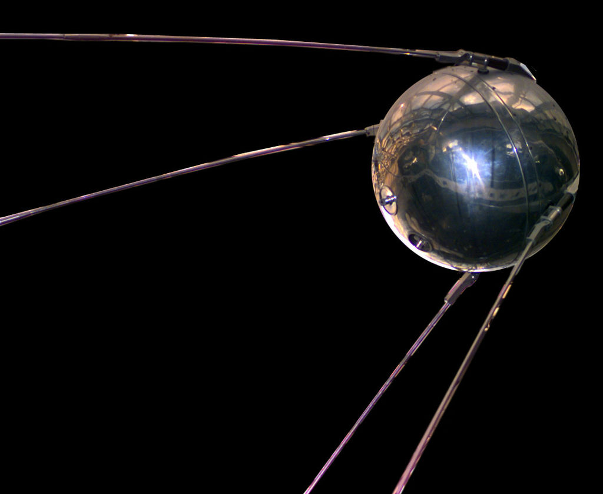

Первый искусственный спутник

«Спутник-1» — первый искусственный спутник Земли, советский космический аппарат, запущенный на орбиту 4 октября 1957 года. Кодовое обозначение спутника — «ПС-1» («Простейший Спутник-1»). Запуск был осуществлён с 5-го научно-исследовательского полигона Министерства обороны СССР «Тюра-Там» на ракете-носителе «Спутник», созданной на базе межконтинентальной баллистической ракеты «Р-7».
Над созданием искусственного спутника Земли, во главе с основоположником практической космонавтики С. П. Королёвым, работали учёные М. В. Келдыш, М. К. Тихонравов, М. С. Рязанский, О. Г. Ивановский, Н. С. Лидоренко, Г. Ю. Максимов, В. И. Лаппо, К. И. Грингауз, Б. С. Чекунов, А. В. Бухтияров и многие другие.
Дата запуска «Спутника-1» является началом космической эры человечества, а в России ежегодно отмечается как памятный день Космических войск. В честь первого искусственного спутника Земли названа равнина на поверхности Плутона